2019コヨットin埼玉実施報告
福島の13組の親子が、ムーミンバレーパークなどを満喫
9月14日(土)～15日(日)の2日間、埼玉県生協連と埼玉県ユニセフ協会の共催、ボーイスカウト埼玉県連盟の協力で、2019コヨットin埼玉を開催しました。この取り組みは、東日本大震災で被災された福島の「子どもの心と成長」と特に「お母さんの心のケア」を大切にしながら保護者の気持ちに寄り添い、子どもと保護者の心身両面からの保養を目的として開催しているもので、福島県生活協同組合連合会を通じて募集をおこない、小学2年生～6年生17人と保護者13人の計30人が参加しました。
【1日目 9月14日(土)】ムーミンバレーパークへ
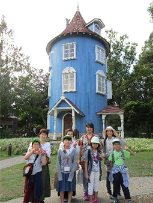
福島駅（7：00）及び郡山駅（8：00）から、保護者と子どもたち13組30人は迎えのスタッフ3人とともに埼玉県に向けて出発し、途中パーキングエリアで昼食をとりながら、12時40分頃ムーミンバレーパークに到着しました。道中のバス車内では、ボーイスカウト埼玉県連盟の泉田さんによるゲームやクイズで盛り上がり、参加者同士交流をしました。
ムーミンバレーパーク（飯能市）到着時は小雨模様でしたが、参加者の熱気で途中から日差しが射してきました。人気のアトラクション「ムーミン屋敷ツアー」は参加者全員が体験し、本当にムーミンたちが住んでいるような部屋にわくわくが止まらないお母さんや子ども達がいました。また、他のアトラクションを体験したり、ムーミンと写真をとったり、ショップで買い物したりと思い思いに楽しみました。
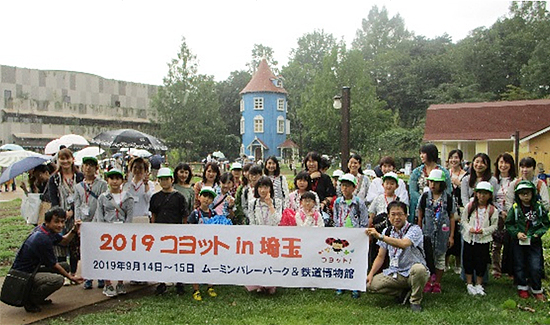
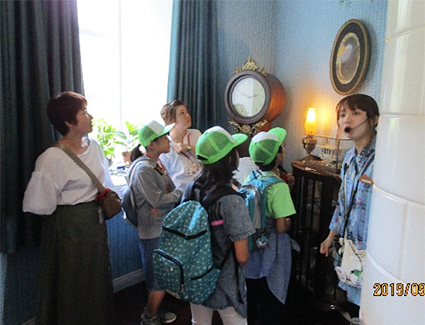
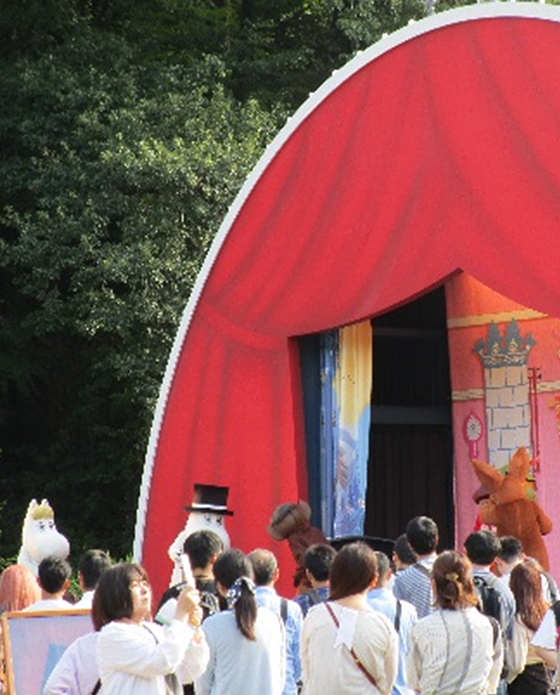
宿泊先のニューサンピア埼玉おごせ（越生町）に移動し、夕食後19時30分から、埼玉県ユニセフ協会による「貿易ゲーム」を子ども4チーム、おとな3チーム対抗で実施しました。このゲームは、紙でお金になる製品を作り、売り買いするもので、グループごとに与えられる資金や紙・はさみ・定規などの道具に差が設けられています。それぞれが、与えられた資源を活かしていかにお金を増やすか、夢中になって知恵を出し合い、他のグループと競い合いました。お母さんが子どもにお金やはさみを借りたいとお願いしても冷たく断られたり、親子の立場は忘れて、競い合う商売人同士という雰囲気になり、貿易ゲームを通して、先進国と発展途上国の不平等と格差について学びました。
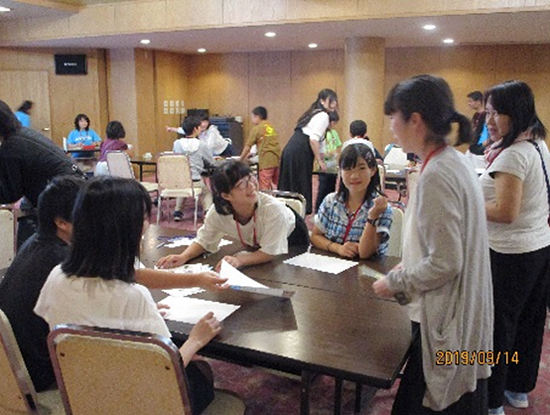
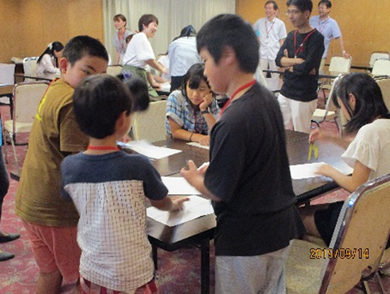
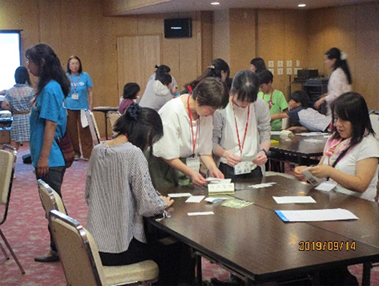
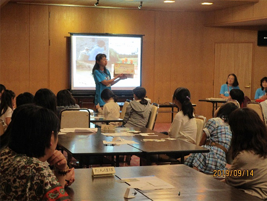
【2日目 9月15日(日)】鉄道博物館へ
2日目は、鉄道博物館（さいたま市北区）で館内のさまざまな車両や展示の見学、買い物を楽しみました。人気の「運転士体験」には子ども達が参加し、一人ひとりがディスプレイ付きの運転台を使ったシミュレータで加速や減速、ブレーキなど、歓声を上げながら運転体験しました。昼食後、参加者全員が「参加してしあわせだなぁと感じた瞬間」と題して感想を書き、感想を掲げて親子で記念写真を撮りました。
14時過ぎ、13組30人は福島に向けて、思い出を胸に帰途につきました。
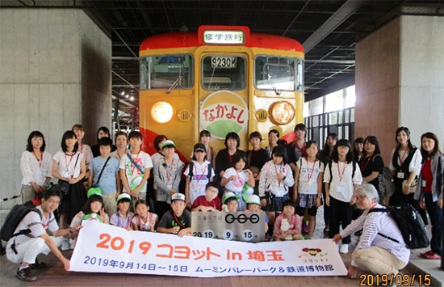
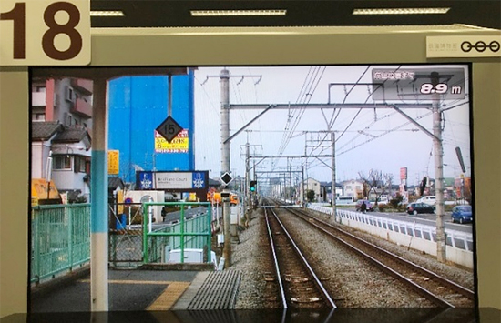
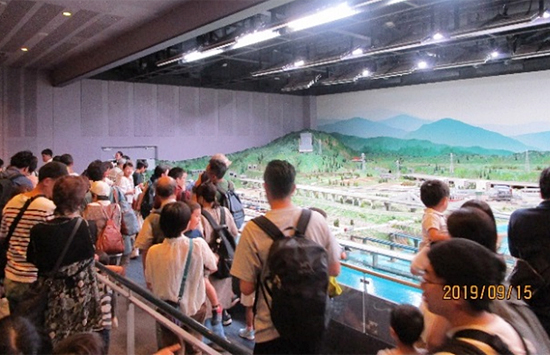
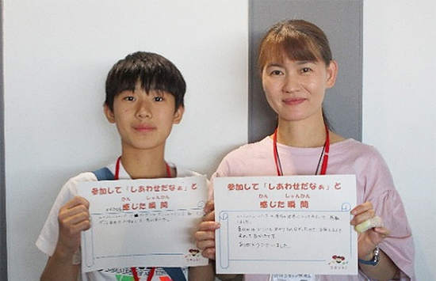